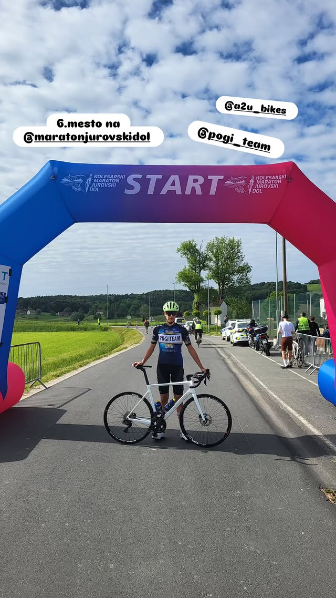

Živjo, sem Maks Poje 🚴♂️
Kolesar ekipe UAE Pogi Team Generali
Živim za kolesarstvo – to ni samo šport, ampak način življenja. Vsako jutro začutim veter v laseh in asfalt pod gumami. Tekmujem s srcem in treniram z glavo. Kolesarim že od malih nog, danes pa nosim dres ekipe, ki me žene naprej – UAE Pogi Team Generali.
Rad delim utrinke s poti, treningov in tekem. Moji socialni kanali so moj dnevnik – poln znoja, sončnih zahodov, gorskih cest in zmag.
Moj cilj? Napredovati vsak dan, ostati zvest sebi in s kolesom raziskovati svet. Ne gre le za hitrost, gre za pot.
Koledar dirk 2025
- ✅ 10. maj – Dirka Juran Dol (5.mesto)
- ✅ 13. junij – Kronometer Franja
- 🕒 15. junij – Maraton Franja
- 🕒 19. julij – Gorje kriterij
- 🕒 20. julij – Vzpon na Pokljuko
- 🕒 9. avgust – Ilirska Bistrica Kriterij
- 🕒 30. avgust – Kriterij Kranj
Galerija
